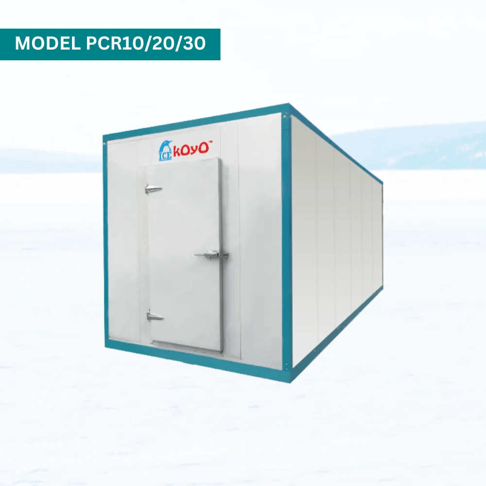

As entrepreneurs, investors, and industry leaders gear up for Franchise Expo Malaysia 2026, the spotlight is shifting toward the essential backend infrastructure that keeps modern businesses running smoothly. In highly competitive sectors like food and beverage (F&B), pharmaceutical, and fresh retail, reliable refrigeration is a core pillar of operational success. This year, the Koyo Portable Cold Room takes center stage to showcase how modern Commercial Cold Storage can seamlessly integrate into expanding business models, ensuring that new ventures are built on a foundation of quality, efficiency, and scalability.
For anyone exploring the diverse Business Franchise Opportunities available at the exhibition, optimizing backend logistics is crucial for maintaining daily profitability. Standard commercial fridges often fall short when a business begins to scale, which is why transitioning to dedicated Commercial Cold Storage is a game-changer for growing brands.
By utilizing a Koyo Portable Cold Room, franchise owners gain the flexibility, precise temperature stability, and mobility required to handle large, fluctuating inventories. This type of reliable storage eliminates the risk of stock spoilage, protecting your bottom line from day one.

The future of retail and food expansion relies heavily on automation, efficiency, and real-time data. This is why the latest generation of the Koyo Portable Cold Room comes heavily integrated with Smart Cooling Solutions. These features include:
Whether you are launching a fast-food chain, a premium dessert kiosk, or a fresh grocery delivery hub, investing in Smart Cooling Solutions ensures your inventory remains pristine, safeguarding your brand reputation as you expand.
As Franchise Expo Malaysia 2026 approaches this July at the Kuala Lumpur Convention Centre (KLCC), preparing a successful business blueprint involves more than just marketing and brand curation. Savvy investors looking to secure high-yield Business Franchise Opportunities must evaluate the long-term cost-effectiveness of their operational equipment.
Implementing advanced Commercial Cold Storage early in your planning phase mitigates operational risks. Having an established partner like Koyo—backed by years of active exhibition experience and industry trust—makes your specific franchise model highly attractive to potential sub-franchisees who value seamless, ready-to-go, and tech-driven operational frameworks.

Summary for Attendees
Don't miss the chance to revolutionize your business logistics at Franchise Expo Malaysia 2026. Take the time to explore how a Koyo Portable Cold Room delivers top-tier Commercial Cold Storage tailored for the modern Malaysian market. By equipping your venture with advanced Smart Cooling Solutions, you will unlock the full potential of your next Business Franchise Opportunities and stay far ahead of the competition.